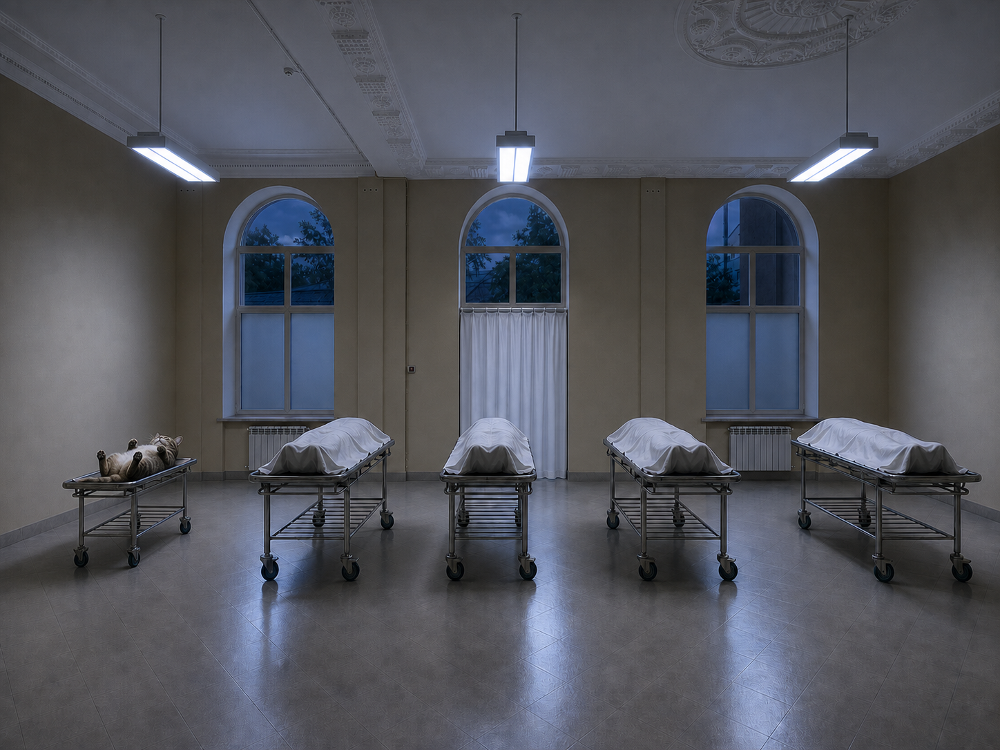
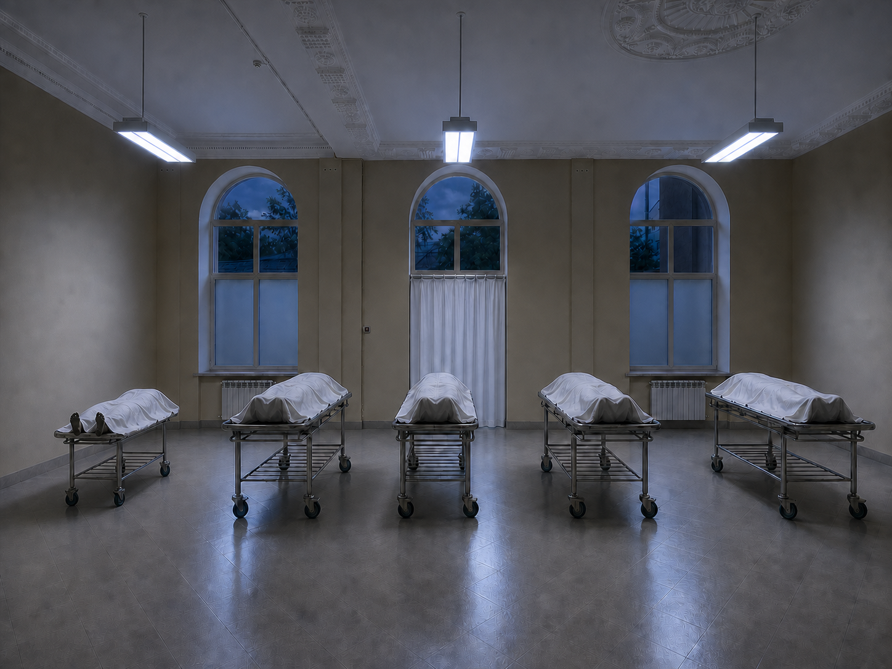
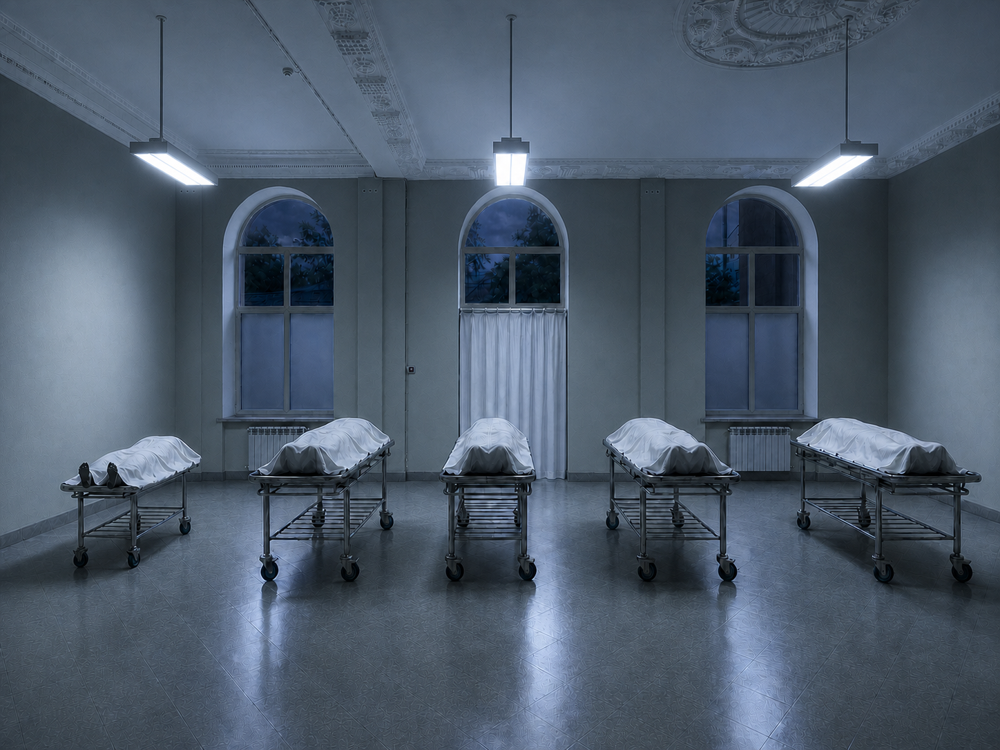

Базовое считывание
- Стерильный и почти музейный зал.
- Мягкая клиническая тревога вместо прямого хоррора.
- Арочные окна и пустота работают на драму сами по себе.
Location 02
Отдельная ветка по моргу: база площадки, стерильная адаптация, refined-проходы и варианты дальнейшего развития сцены собраны в одной самостоятельной странице.
Внутри страницы
Location 02
Самая чистая по базе площадка. Важнее всего подчеркнуть стерильность, арочную симметрию и тревожную пустоту, а не перегрузить ее деталями.


Location 02 Morgue
По транскрибации морг должен стать почти полностью зачищенным пространством: убираются люстры, цветы, скамейки и столы, а помещение собирается как пустой клинический зал с жесткой симметрией и тревожной стерильностью.
Вместо люстр появляются две спускающиеся больничные люминесцентные лампы, а в центре кадра выстраиваются пять хромированных кушеток с накрытыми телами. Свет можно мыслить в двух режимах, но базовое ощущение здесь — холодная чистота и тишина перед действием.

Morgue Output
Ниже добавлен следующий проход по той же safe-базе: люстры уже убраны, а потолок дополнительно зачищен вручную и локально выровнен по швам, чтобы верх кадра читался цельнее.
Это не замена исходной safe-версии, а ее следующая рабочая итерация для презентации более чистого варианта морга на том же архитектурном каркасе.

Morgue Output
Следующий проход сделан уже от базы
morgue-v4-evening-lamps-on-door-curtain-short-left-gurney.png:
короткая левая кушетка теперь работает как отдельный вариант под
котика.
Кот лежит на спине мордочкой вверх, лапками к камере, чтобы силуэт и сама идея считывались сразу даже в превью-кропе на странице.

Morgue Output
Отдельный следующий вариант сохраняет ту же сцену и ту же позу котика, но теперь он накрыт такой же белой тканью, как и другие тела на кушетках.
Лапки остаются снаружи и торчат в сторону камеры, чтобы эта деталь читалась сразу и в превью, и в полном просмотре.

Morgue Output
Это отдельная вариация того же покрытого котика, но уже с более реалистичным светом морга: холодным, клиническим и более стерильным по ощущению.
Геометрия комнаты и вся логика сцены сохранены, а настроение сдвинуто в сторону настоящего холодного моргового освещения.

Morgue Current Base
Текущая зафиксированная база для продолжения:
assets/images/Morgue/morgue-v4-evening-lamps-on-door-curtain-short-left-gurney.png
Следующие изменения по моргу делаем уже поверх этой версии с короткой левой кушеткой и корректной логикой шторки, а не начинаем заново от нестабильных генераций.
{kind=link}
{kind=link}
{kind=link}